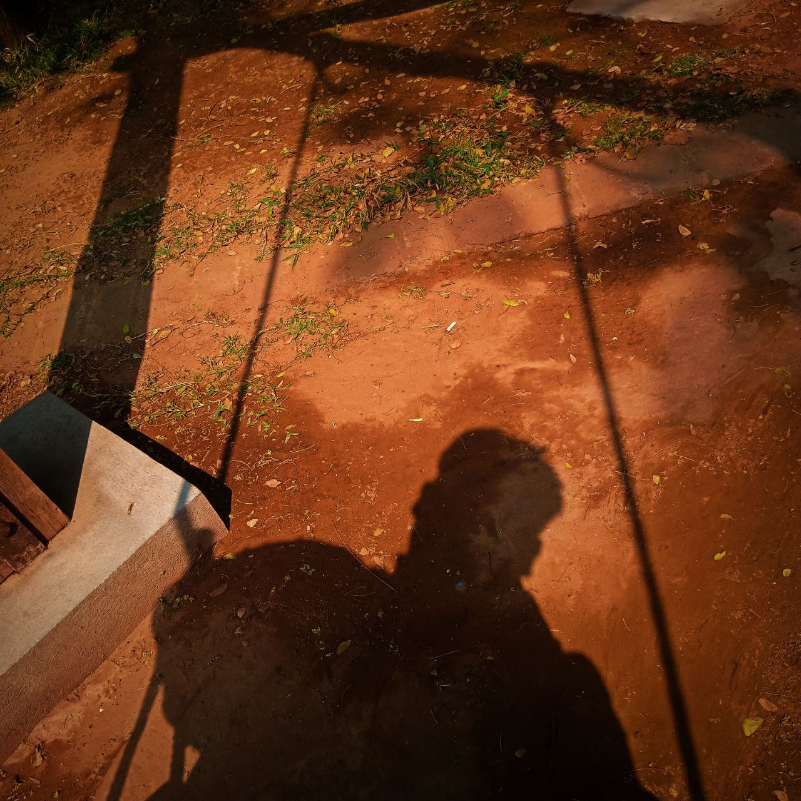

My Name is Sai Lin Aung.I'm 18 year's old.I Live in Mandalay.I was learning Web programming Language.I study standraded in Summit Myanmar IT job Traning Centre.I'm First Year Student.I will be learn many of website programming Language.I am a person who likes to travel a lot. I was a persom who loved traveling a lot when i was young.There are so many place I haven't been.Ther are many places I want to go.In This Day and age,It's not conventent to go anywher.If the policy situtation was good,I would like to gom back to many Trips.I was going to famous place.Famous place eng. Bagan,Kalaw,Myiek,Mandalay,Yangon,Kachin,InnLay,InnTawGyi,Za Lone Taung,Taung Gyi,Aung Pan,Kuu Tho Taw,Shwe Kaung Gyi,Mandalay Hill,U Bein and etc,
